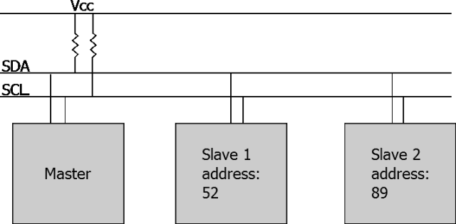
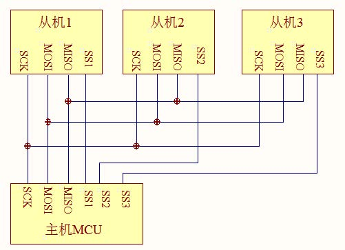
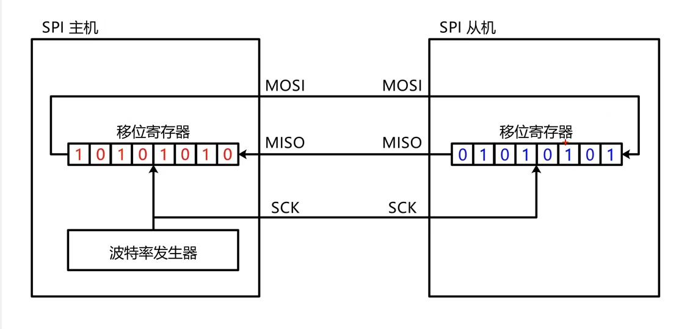
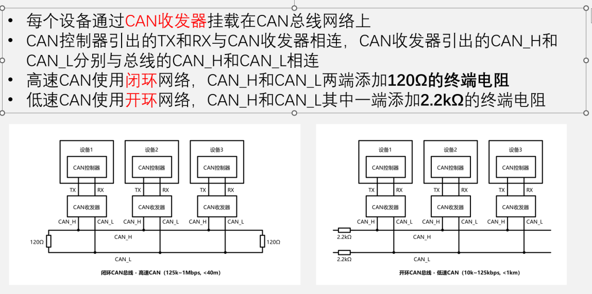
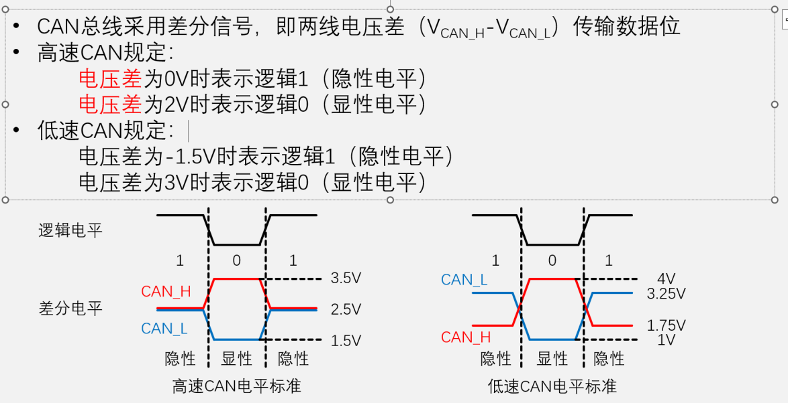

本文最后更新于 2026年3月9日 晚上
嵌入式通讯协议详解
引言
在嵌入式系统中，通讯协议是确保不同设备之间能够有效、可靠地交换数据的关键。本文将深入探讨常见的嵌入式通讯协议，包括它们的特点、应用场景以及实现细节。“熟悉常见通讯协议”是硬指标。常见的通讯方式有三种：
单工：数据只能单向传输，发送方和接收方不能同时进行通信。
半双工：数据可以双向传输，但不能同时进行通信，发送方和接收方需要轮流使用通信通道。
全双工：数据可以双向传输，并且发送方和接收方可以同时进行通信。
1. UART 通讯协议
1. 物理层：只需要三根线
UART 是点对点 通信，通常只需要三根导线：
理解 UART 的核心在于其名称中的异步 二字：它不需要共享时钟信号，而是靠双方约定的“协议规则”来对齐数据。
2. 协议层：数据帧结构
由于没有时钟线（Clock），接收方不知道发送方什么时候开始发数据。因此，UART 规定了一套严格的数据帧 格式：
空闲状态（Idle）： 线路持续保持高电平（Logic 1）。
起始位（Start Bit）： 当线路电平从高变低（逻辑 0）时，表示一帧数据的开始。
数据位（Data Bits）： 通常是 8 位（1 字节），从最低位（LSB）开始传输。
校验位（Parity Bit）： 可选。用于简单的奇偶校验，检查传输是否出错。
停止位（Stop Bit）： 保持高电平（1 或 2 位），表示一帧结束，并让线路回到空闲状态。
关键参数 ：波特率 (Baud Rate)
常见速率： 9600, 115200（最常用）, 921600 bps。
误差容忍： 双方的时钟频率误差通常不能超过 2.5%，否则会导致采样偏移，读出乱码。
其优点是电路简单只需要两根线（不包括地线），适合短距离通信，成本低廉，没有复杂的地址和握手流程。缺点是带宽有限，一对一通信不支持挂载多个设备。下面的STM32配置串口的代码示例：
1 2 3 4 5 6 7 8 9 10 11 12 13 14 15 16 17 18 19 20 21 22 23 24 25 26 27 28 29 30 31 32 33 34 35 36 37 38 39 void Serial_Init (void ) 9600 ; 1 ;1 ;
当接收到数据时，当 UART 的移位寄存器接收到一帧完整的数据（通常是 8 bits）后，硬件会自动将这 8 位数据拷贝到 USART_DR（数据寄存器）中。一旦数据进入 DR 寄存器，硬件会将状态寄存器中的 RXNE 标志位置为 1。因为使能了 USART_IT_RXNE 中断，只要该标志位为 1，USART1_IRQHandler 函数会被调用：
1 2 3 4 5 6 7 8 9 void USART1_IRQHandler (void ) if (USART_GetITStatus(USART1, USART_IT_RXNE) == SET)uint8_t data = USART_ReceiveData(USART1);
1 2 3 4 5 6 7 8 9 10 11 12 13 14 15 16 17 18 19 20 21 22 23 24 25 26 27 28 29 30 31 32 33 34 35 36 37 38 39 40 41 42 43 44 45 46 47 48 49 50 51 52 53 54 55 56 57 58 59 60 61 62 63 64 65 66 67 68 69 70 71 72 73 74 75 void Serial_SendByte (uint8_t Byte) while (USART_GetFlagStatus(USART1, USART_FLAG_TXE) == RESET); void Serial_SendArray (uint8_t *Array, uint16_t Length) uint16_t i;for (i = 0 ; i < Length; i ++)void Serial_SendString (char *String) uint16_t i;for (i = 0 ; String[i] != '\0' ; i ++)uint32_t Serial_Pow (uint32_t X, uint32_t Y) uint32_t Result = 1 ;while (Y--)return Result;void Serial_SendNumber (uint32_t Number, uint8_t Length) uint8_t i;for (i = 0 ; i < Length; i++) 10 , Length - i - 1 ) % 10 + '0' ); int fputc (int ch, FILE *f) return 0 ;void Serial_Printf (char *format, ...) char String[100 ];vsprintf (String, format, arg);uint8_t Serial_GetRxFlag (void ) if (Serial_RxFlag == 1 )0 ;return 1 ;return 0 ;uint8_t Serial_GetRxData (void ) return Serial_RxData;
2. IIC 通讯协议
1. 物理层：只需要两根信号线
IIC 最大的硬件特点是开漏输出（Open-Drain）+ 上拉电阻。
SDA (Serial Data): 双向数据线，负责传输数据。
SCL (Serial Clock): 时钟线，由主设备（Master）控制，决定通信节奏。
关键点： I2C 是同步通信 。因为有了 SCL 这根时钟线，发送方和接收方不需要约定波特率，只要跟着时钟走就行了。这比 UART 稳定得多。

IIC 最大的硬件特点是开漏输出（Open-Drain）+ 上拉电阻 。
开漏输出： 设备只能将线拉低（0），无法主动拉高（1）。当所有设备都不拉低时，线通过上拉电阻自然保持高电平（1）。
上拉电阻： 连接在 SDA 和 SCL 线上，确保线路在空闲状态下保持高电平。虽不是强上拉但是不妨碍通信。
IIC规定所有设备只能将线拉低（0），无法主动拉高（1）。当所有设备都不拉低时，线通过上拉电阻自然保持高电平（1）。因此，IIC的空闲状态是SDA和SCL都保持高电平。只有下拉 和松手 的状态。
2. 协议层：数据帧结构
IIC总线可以挂载多个设备，支持一主多从 和多主多从 的通信模式。每个设备都有一个唯一的地址，主设备通过地址来选择要通信的从设备。常见的IIC地址长度有7位 和10位 ，7位地址可以支持最多128(2^7)个设备（其中一些地址保留），10位地址可以支持更多设备。
起始与停止信号
寻址机制 7 位从机地址 + 1 位读写位 (R/W)。
应答信号
ACK (Acknowledge): 低电平，代表“收到，请继续”。
NACK (Not Acknowledge): 高电平，代表“出错了”或“我不想要了”。7 位从机地址 + 1 位读写位 的8位数据，需要有接收方发送应答位拉低SDA表示有人应答才会继续发送数据。后续每个八位数据后都需要发送应答位，接收方拉低SDA表示收到数据并准备好接收下一字节，拉高SDA表示出错或不想继续了。主设备在发送完数据后会发送停止信号，释放总线。不论是读还是写，都只能在SCL为低电平的时候改变SDA状态，在SCL为高电平的时候保持SDA状态不变供读取。也就是说低电平的时候放数据，高电平的时候读数据。
三种模式
指定地址写：对于指定设备地址，在指定地址下写入指定数据。流程是：起始信号 -> 发送设备地址 + 写位 -> 等待应答 -> 指定设备地址(为设备的寄存器) -> 等待应答 -> 发送数据 ->等待应答 -> 停止信号。
当前地址读：对于指定设备，在当前地址指针指示的地址下读取从机数据。流程是：起始信号 -> 发送设备地址 + 读位 -> 等待应答 -> 读取设备数据 -> 发送应答 -> 停止信号。地址指针在每次读写后会自动加1，指向下一个地址。
指定地址读：也叫混合模式混合了上述两种时序，先是指定设备地址但是是写位，发送完设备地址后不发送数据而是重新发送起始信号表示重复起始信号，这时虽然重新开始了但是指针地址已经由我们指定了 ，后再发送设备地址但是是读位，最后读取数据。流程是：起始信号 -> 发送设备地址 + 写位 -> 等待应答 -> 重新发送起始信号 -> 发送设备地址 + 读位 -> 等待应答 -> 读取设备数据 -> 发送应答 -> 停止信号。
还可以一次性读多个字节，只要在发送一个字节后继续发送应答位下拉表示继续读下一个字节，直到最后一个字节发送完后发送NACK悬空表示不想继续了。
现实中常用硬件IIC不需要手搓时序并配合DMA：
1 2 3 4 5 6 7 8 9 10 11 12 13 14 15 16 17 18 19 20 21 22 23 24 25 26 27 28 29 30 31 32 33 34 35 36 37 38 39 40 41 42 43 44 45 46 47 48 49 50 51 52 53 54 55 56 57 58 59 60 61 62 63 64 65 66 #include "stm32f10x.h" #define BUFFER_SIZE 8 uint8_t SendBuffer[BUFFER_SIZE] = {0x01 , 0x02 , 0x03 , 0x04 , 0x05 , 0x06 , 0x07 , 0x08 };void I2C1_DMA_Init (void ) {0x00 ;400000 ; uint32_t )&I2C1->DR; uint32_t )SendBuffer; void I2C1_DMA_Send (uint8_t SlaveAddr) {while (I2C_GetFlagStatus(I2C1, I2C_FLAG_BUSY));while (!I2C_CheckEvent(I2C1, I2C_EVENT_MASTER_MODE_SELECT));while (!I2C_CheckEvent(I2C1, I2C_EVENT_MASTER_TRANSMITTER_MODE_SELECTED));
为什么一个引脚既能输入还能输出，SDA在写的时候需要输出模式，在读的时候按理说需要改成输入模式啊，为什么代码中只配置了开漏输出？原因是开漏输出模式既能输出又能读取引脚状态 ，因为开漏输出配置仅改变了输出驱动部分（MOS管只接了地），而引脚的输入采样电路并没有关闭。当开漏输出设置为高阻态（写1）时，引脚是否为高电平取决于外部上拉电阻。若外部为高，读取即为1；若外部被拉低，读取即为0。
3. SPI 通讯协议
SPI 的核心特性：
A. 全双工 (Full Duplex)
B. 极高的速率
C. 没有“应答”机制
1. 物理层：四根线
SPI 是一种主从模式 （Master-Slave）的通信，通常需要四根线：
SCK (Serial Clock): 时钟线，由主机产生（控制节奏）。
MOSI (Master Out Slave In): 主机发送，从机接收。
MISO (Master In Slave Out): 从机发送，主机接收。
SS/CS (Slave Select / Chip Select): 片选线，由主机控制，拉低时表示“选中该设备”。

2. SPI 的核心：移位寄存器 (Shift Register)
理解 SPI 的本质，其实就是主机和从机之间交换了两个移位寄存器里的数据。

3. 关键配置：极性 (CPOL) 与 相位 (CPHA)
SPI 比较麻烦的一点是，不同的传感器厂家对“什么时候采样数据”的要求不同。这衍生出了 4 种模式：
1 2 3 4 5 6 7 8 9 10 11 12 13 14 15 16 17 18 19 20 21 22 23 24 25 26 27 28 29 30 31 32 33 34 35 36 37 38 39 40 41 42 43 44 45 46 47 48 49 50 51 52 53 54 55 56 57 58 59 60 61 62 63 64 65 66 67 68 69 70 71 72 73 74 75 76 77 78 #include "stm32f10x.h" #define BUFFER_SIZE 16 uint8_t TxBuffer[BUFFER_SIZE] = {0x01 , 0x02 , 0x03 , 0x04 , 0x05 , 0x06 , 0x07 , 0x08 , 0x09 , 0x0A , 0x0B , 0x0C , 0x0D , 0x0E , 0x0F , 0x10 };uint8_t RxBuffer[BUFFER_SIZE];void SPI1_DMA_Init (void ) {uint32_t )&SPI1->DR;uint32_t )TxBuffer;uint32_t )RxBuffer;void SPI1_DMA_Transfer (void ) {
通常只读的情况下主机可以随意发送数据，常用0x00或者0xFF。只写的时候比如驱动屏幕，就不需要管MISO的数据。
4. CAN 通讯协议
CAN（Controller Area Network）是一种专为汽车电子系统设计的通讯协议，具有高可靠性和实时性。它采用多主机总线结构 ，支持错误检测和纠正机制。其通过CAN_H和CAN_L两根线进行信号传输，使用差分信号 提高抗干扰能力。CAN协议定义了数据帧格式，包括标准帧和扩展帧，支持多种数据速率。

与IIC类似，输出0就拉低，输出1就放手，默认高电平。
1. 物理层：差分信号的威力
CAN 与 UART/I2C 最大的不同在于它不看“绝对电压”，而是看两根线（CAN_H 和 CAN_L ）之间的电压差。
显性电平 (Dominant, 逻辑 0)： 两根线电压拧在一起产生压差。它像“黑体字”，能覆盖掉别人的信号。
隐性电平 (Recessive, 逻辑 1)： 两根线电压一致，压差为 0。它像“透明色”，容易被别人覆盖。

为什么要这么设计？ 因为差分信号抗干扰极强。如果外界有一个强电磁脉冲，两根线会同时升高，但它们的差值保持不变，数据依然稳如泰山。这在你处理带有大功率电机的机器人或工业设备时是救命的。
2. 协议层：没有地址，只有“标签”
在 I2C 里，你要给从机点名（地址）。但在 CAN 总线上，消息是没有地址的。
3. 仲裁机制：谁狠谁优先
CAN 总线支持多主通信。如果两个设备同时开始说话怎么办？
它们会一边发一边读总线电平。
逻辑竞争： “显性电平 0”能覆盖“隐性电平 1”。
如果 A 发 1，B 发 0，总线呈现 0。A 发现自己发的跟读到的不一样，立刻闭嘴退出。
结果： ID 越小的包（开头的 0 越多），优先级越高，能够无损地抢占总线。
未完待续…